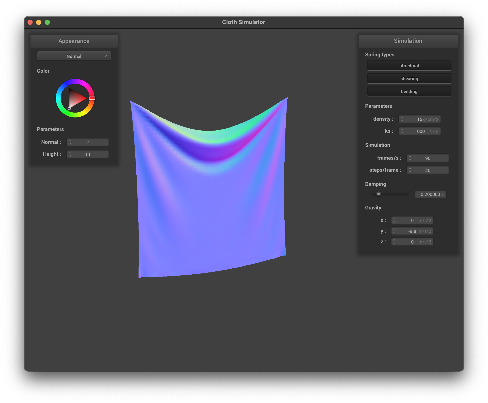

Overview
In this project, I created a physical simulation based on the model of a cloth. This began by creating all
the particles and defining their physical interactions through springs. Then I calculated all the forces
between all the particles and simualted their movement through verlet integration. Next, I introduced
collisions between other objects in the world space, as well as collisions between itself. Lastly, I
introduced shaders using GLSL to add colors or textures to the cloth model.
Part I: Masses and springs
Here are some images referencing the wireframe `pinned2.json`.
|
Wireframe clearly showing all the point masses and springs found in pinned2.json
|
The same wireframe with shearing constraints turned off
|
|
pinned2.json wireframe with just shearing constraints
|
The same wireframe with all constraints turned on
|
Part II: Simulation via Numerical Integration
Describe the effects of changing the spring constant ks; how does the cloth behave from start to rest with a
very low ks? A high ks?
Changing the ks value can be described using very familiar situations that one can easily experience in real
life. Increasing the ks value creates springs that have very high tension, while lowering it does the
opposite. The figure on the left is rendered with a ks value of 100,000. The cloth acts almost like a sheet
of paper, with very low elasticity, but still bends a little bit near the center. On the other hand, lower
ks values look like a piece of cloth, allowing the material to stretch very far.
|
pinned2.json with spring coefficient of 100,000.
|

pinned2.json with spring coefficient of 1,000.
|
Again, changing the densities can be described like real life objects. The image on the right has a density
of 1, and can be envisioned as a thing sheet of silk. On the other hand, the higher density (10,000) could
probably be imagined as a sheet of rubber. The ripples along the edges make it very clear that the object
feels heavy.
|
pinned2.json with high density.
|
pinned2.json with low density.
|
The damping parameter changes how much the spring pulls on each of the praticles in the cloth. Higher damping
acts as if there is a light gust of wind blowing on the cloth, which slowly disappears. The cloth falls
gracefully in this scenario. On the other hand, lower damping just looks like regular gravity with no air
resistance. This one is harder to picture in a photo, thus the figure below only shows the render with high
damping.
|
pinned2.json with almost 100% damping.
|
|
pinned4.json in its final resting state with default configurations!
|
Part III: Handling collisions with other objects
In this section, I implemented code that corrects the cloth's point mass positions upon colliding with
objects. Collisions with spheres and planes have slightly different implementations and correction vectors.
The results are shown below.
|
Cloth resting on the sphere with regular ks.
|
Cloth resting on the sphere with a ks of 50,000.
|
|
Cloth resting on the sphere with a ks of 500.
|
Cloth resting on the plane with mirror shading.
|
Part IV: Handling self-collisions
In this section, I implemented self-collision code to make sure the cloth does not collapse on itself. The
figures below show three stages of the cloth falling down.
|
Early stages of the cloth falling down.
|
Middle stages of the cloth falling down.
|
|
Cloth resting on itself with default configurations.
|
The following images show variations of the cloth falling down with non-default configurations. On the left
is the cloth with lower spring settings. The cloth appears to be a lot more loose and collapses on itself in
a lot more locations than the images shown above. On the left is a cloth with higher density. The effect is
quite similar to the loose cloth on the left, rather the whole sheet collapse further into itself rather
than specific points.
|
Cloth with a ks of 200.
|
Cloth with higher density at 1500.
|
Part V: Shaders
Explain in your own words what is a shader program and how vertex and fragment shaders work together to
create lighting and material effects.
Shader programs are an alternative and much faster way to re-create realistic lighting effects on objects
without the ray tracing (as was done in previous homeworks). Shader programs combine vertex shading and
fragment shading using the same math as ray tracing to simualte lighting. Vertex shading defines the
location of the pixel (or more accurately, sample) on the object that is to be rendered. At this stage,
sample coordinates can be moved around to create a textured look on the object. On top of this, the vertex
are sent to fragment shading, which simualtes the light at that sample or vertex location. The same math
used in ray tracing can also be applied here in order to calculate the diffuse, ambient, and specular lights
reflected by the object.
Explain the Blinn-Phong shading model in your own words. Show a screenshot of your Blinn-Phong shader
outputting only the ambient component, a screen shot only outputting the diffuse component, a screen shot
only outputting the specular component, and one using the entire Blinn-Phong model.
The Blinn-Phong shader model categorizes the light effects into three separate categories: the ambient,
diffuse, and specular. Ambient light is simplest as it just models room light or general light on the
object. Diffuse light is object specific and depends on the BRDF of the object, which defines how it looks.
This depends on where light sources exist on the image. Lastly, specular shading creates that realistic
effect for light that is reflected by the object, which often describes mirror streak on shiny surfaces.
|
Sum of Blinn-Phong shader.
|
Blinn-Phong with only diffuse light.
|
|
Blinn-Phong with only ambient light.
|
Blinn-Phong with only specular light.
|
|
sphere.json modified with a texture of a rendered cube found online.
|
For bump mapping, I'm using the recommend function to determine h as written on the spec, which takes the red
color of the texture to determine the bumps. I'm using texture4.png for the textures. On the left side is
bump mapping, and on the right side is displacement mapping. The most prominent difference can be seen via
the lighting effects, as displacement mapping changes the physical position of the samples during rendering,
thus it may appear brighter because the samples jot out further outside of the surface. This is also
noticeable when zoomed in, due to the lighting effects, the displacement mapping clearly shows the cloth
with ridges, while bump mapping does not.
|
Bump mapping.
|
Displacement mapping.
|
The differences bewteen bump mapping and displacement mapping on a more coarse surface of the sphere is quite
minimal. The effects are even more noticeable on displacement mapping, rather than bump mapping. When zoomed
in, its clear that the textured surface of the surface is present on the higher resolution surface rather
than the coarse one.
|
Bump mapping, coarse.
|
Displacement mapping, coarse.
|